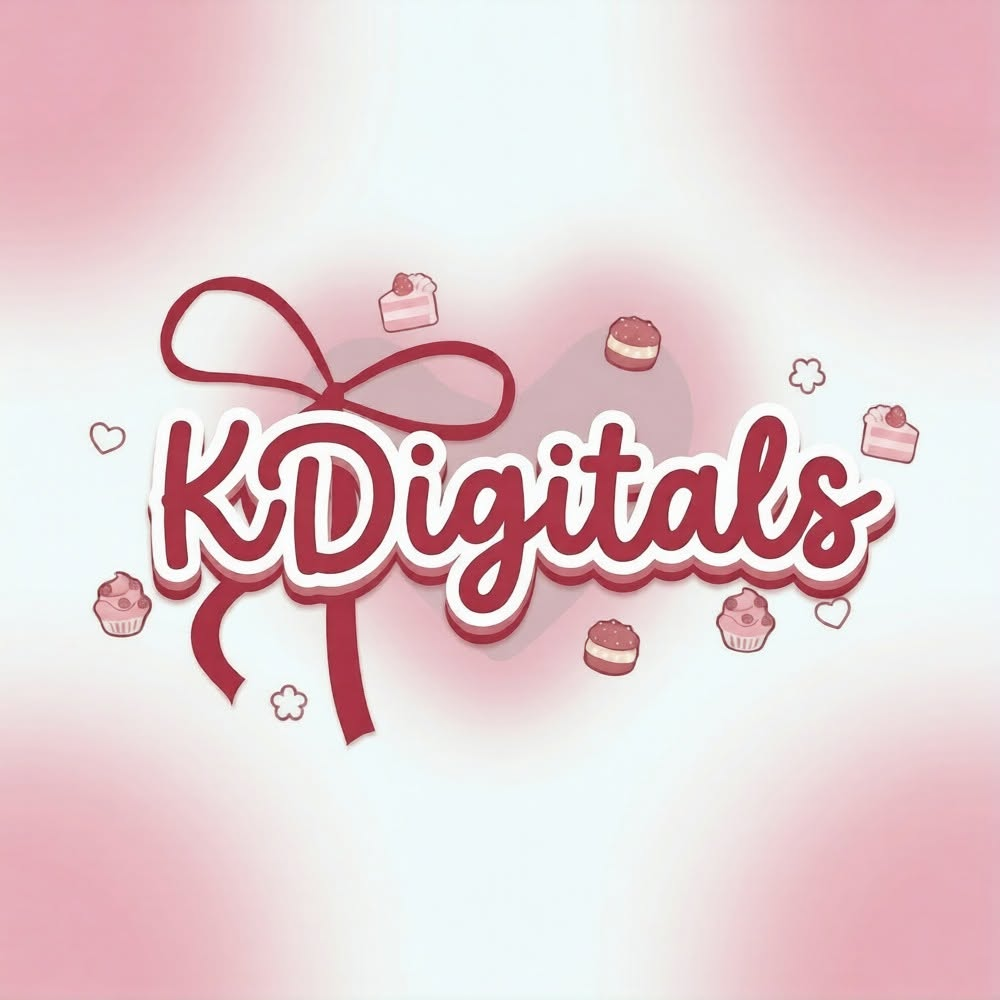

PowerPoint slide templates
Give your ideas a clear, polished presentation with slide templates for school, work, and business. Explore the shops for listed designs or ask about your presentation needs.
Explore the shops ↗A sprinkle of imagination. A whole lot of heart.
Welcome to the little world of KDigitals.

Shop a little, discover something new,
or come along for the creative journey.
Find your next digital favorite in my little creative shop.
A little inspiration, ready to download and make your own.
Creative moments, fresh ideas, and a peek behind the creations.
Presentation and résumé templates, digital layouts, and spreadsheet services to help you create, organize, and save time.
Give your ideas a clear, polished presentation with slide templates for school, work, and business. Explore the shops for listed designs or ask about your presentation needs.
Explore the shops ↗Start with a structured résumé layout and personalize it with your own experience, education, and skills. Check each listing for its editable format and included files.
Browse résumé templates ↗Explore reusable digital layouts for planning, organizing, and presenting your ideas. Have a specific template in mind? Send me your requirements so we can discuss it.
Ask about a template ↗Get help setting up practical spreadsheets for task lists, schedules, budgets, and records. Tell me what you need to track and which app you use so we can plan a suitable layout.
Discuss a spreadsheet ↗Bring recurring tasks and scattered information into a clearer system. Ask about planners, trackers, and spreadsheet workflows that help organize your day and reduce repetitive work.
Let’s organize your workflow ↗Need a more personal touch? Get in touch about résumé creation, formatting, and job-related documents using the details you provide. We’ll agree on the scope, price, and timeline first.
Ask about a service ↗Looking for a custom template or tracker? Share your preferred app, the details you want included, and your deadline. Availability, pricing, and deliverables are discussed before work begins.
Browse a shop for digital products, or message me about a service.
Read the product listing, or agree on your project’s scope, price, and timeline.
Follow the shop’s checkout instructions or the next steps we agree on together.
My creative journey started while I was still studying and working as a cashier. Along the way, I offered digital services—creating résumés and job-related documents, and completing assignments for others. I also worked as a part-time virtual assistant through an opportunity I found on OnlineJobs.ph.
Today, I’m not formally employed, and I’m putting my time and heart into KDigitals: creating digital products and templates, offering résumé and document services, and helping organize work with Google Sheets and Excel. You can explore my products or connect with me through Facebook, Raket.ph, and Gumroad.
Every chapter has taught me to keep learning, try new things, and turn small ideas into something useful. This is my little corner to share what I create—and keep growing along the way.
With heart, Krisha ♡Let’s connect on Facebook ↗Visit my Raket.ph or Gumroad shop using the links above. Check the individual listing for its price, file format, and what’s included before purchasing.
Message me on Facebook with the type of document you need, the information you want included, and your preferred deadline. We’ll discuss availability, scope, and pricing before starting.
Yes—message me on Facebook with your preferred app, purpose, content or data fields, and deadline. For spreadsheets, tell me whether you use Google Sheets or Excel. We’ll discuss the features, file format, pricing, and availability before starting.
Compatibility varies by template. Check the product listing for the supported app, file format, and editing instructions. For a custom request, let me know which app and version you use.
This website highlights digital products and services. Read the shop listing carefully for the delivery format and access instructions.
That depends on the specific product. Check the license and description in its listing; editing or resale permission is not included with every product.
Find me on TikTok, Instagram, and Facebook through the social links on this page for creative moments and updates.
Need a presentation template, a résumé, or a spreadsheet to organize your work? Tell me what you have in mind, and let’s discuss the next step.
Connect on Facebook ↗Or explore my shops ↑